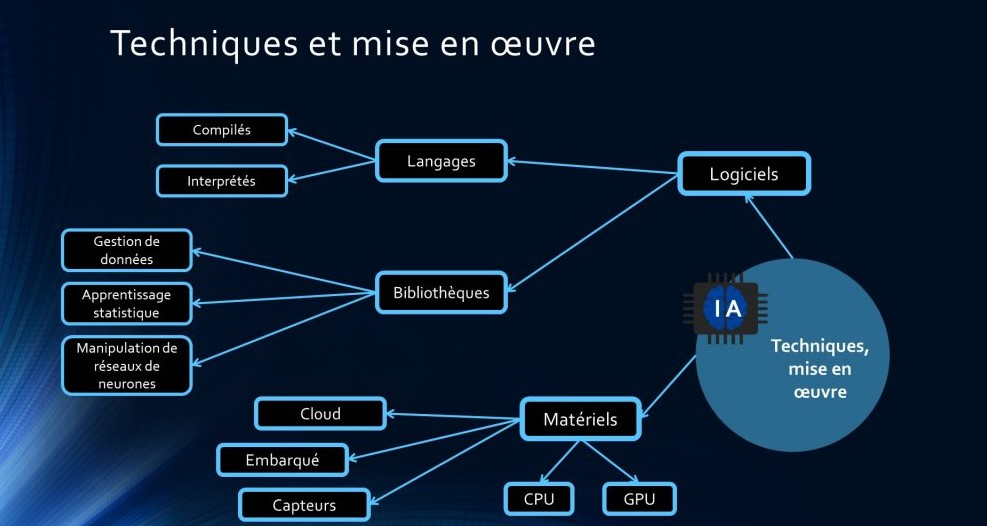

IA pour les Experts
Plongez au cœur des concepts techniques, algorithmes et frameworks de l'IA.
Concepts Techniques Approfondis
Algorithmes d'Apprentissage
Le choix de l'algorithme d'apprentissage est crucial en Machine Learning et dépend de la nature du problème (supervisé, non supervisé, par renforcement), du type de données, et des performances souhaitées. Voici un aperçu de quelques familles d'algorithmes importantes :
1. Algorithmes pour l'Apprentissage Supervisé :
- Régression Linéaire et Logistique :
- Régression Linéaire : Prédit une valeur continue (ex: prix d'une maison) en trouvant la meilleure relation linéaire entre les variables d'entrée et la sortie.
- Régression Logistique : Prédit une probabilité binaire (ex: oui/non, spam/non-spam) en utilisant une fonction logistique (sigmoïde) pour borner la sortie entre 0 et 1.
- Arbres de Décision et Forêts Aléatoires :
- Arbres de Décision : Modèles hiérarchiques qui posent une série de questions sur les données pour les classer ou prédire une valeur. Faciles à interpréter.
- Forêts Aléatoires (Random Forests) : Ensemble d'arbres de décision. Chaque arbre est entraîné sur un sous-ensemble différent des données et des caractéristiques. La prédiction finale est une moyenne (régression) ou un vote majoritaire (classification) des prédictions de chaque arbre. Réduit le surapprentissage (overfitting).
- Machines à Vecteurs de Support (SVM) : Trouvent l'hyperplan optimal qui sépare au mieux les classes de données dans un espace de grande dimension. Efficaces en haute dimension et lorsque le nombre de dimensions est supérieur au nombre d'échantillons.
- K-Plus Proches Voisins (K-NN) : Algorithme non paramétrique qui classe un nouvel échantillon en fonction de la majorité de ses k plus proches voisins dans l'ensemble d'entraînement. Simple mais peut être coûteux en calcul pour de grands jeux de données.
- Réseaux de Neurones (Supervisés) :
- Perceptron Multi-Couches (MLP) : Le type de réseau de neurones feedforward le plus classique, utilisé pour la classification et la régression.
- Réseaux de Neurones Convolutifs (CNN) : Particulièrement efficaces pour le traitement d'images. Utilisent des couches de convolution pour extraire des caractéristiques hiérarchiques (arêtes, formes, objets).
- Réseaux de Neurones Récurrents (RNN) et LSTM/GRU : Conçus pour traiter des données séquentielles (texte, séries temporelles). Possèdent des connexions récurrentes qui leur donnent une "mémoire" des informations précédentes. Les LSTM (Long Short-Term Memory) et GRU (Gated Recurrent Unit) sont des variantes qui résolvent le problème de la disparition du gradient dans les RNN classiques.
- Transformers : Architecture plus récente (introduite en 2017) qui a révolutionné le traitement du langage naturel (ex: BERT, GPT). Utilise des mécanismes d'attention pour peser l'importance des différentes parties de la séquence d'entrée.
2. Algorithmes pour l'Apprentissage Non Supervisé :
- K-Means (K-Moyennes) : Algorithme de clustering qui partitionne les données en k clusters, où chaque point de données appartient au cluster dont le centre (centroïde) est le plus proche.
- Clustering Hiérarchique : Construit une hiérarchie de clusters, soit de manière agglomérative (en partant de points individuels et en les fusionnant) soit divisive (en partant d'un seul cluster et en le divisant).
- Analyse en Composantes Principales (ACP / PCA) : Technique de réduction de dimensionnalité qui transforme les données en un nouvel ensemble de variables (composantes principales) non corrélées, ordonnées par variance décroissante.
- Auto-encodeurs : Type de réseau de neurones utilisé pour l'apprentissage de représentations (encodage) de manière non supervisée, souvent pour la réduction de dimension ou la détection d'anomalies. Ils apprennent à reconstruire l'entrée en sortie.
3. Algorithmes pour l'Apprentissage par Renforcement :
- Q-Learning : Algorithme sans modèle qui apprend une fonction de valeur action (Q-value) indiquant l'utilité d'une action donnée dans un état donné.
- SARSA (State-Action-Reward-State-Action) : Similaire au Q-Learning, mais met à jour sa politique en fonction de l'action réellement effectuée par la politique actuelle.
- Deep Q-Networks (DQN) : Combine le Q-Learning avec des réseaux de neurones profonds pour gérer des espaces d'états et d'actions de grande dimension (ex: jeux Atari).
- Algorithmes de Gradient de Politique (Policy Gradient Methods) : Apprennent directement la politique (la stratégie de l'agent) plutôt qu'une fonction de valeur. Exemples : REINFORCE, A2C/A3C (Advantage Actor-Critic).
Cette liste n'est pas exhaustive, mais elle couvre les algorithmes fondamentaux que tout expert en IA devrait connaître. Le choix et l'optimisation de ces algorithmes constituent une part importante du travail en science des données et en ingénierie de l'IA.

Frameworks et Bibliothèques Populaires en IA
Le développement en intelligence artificielle est grandement facilité par une multitude de frameworks et bibliothèques open-source. Ces outils fournissent des implémentations optimisées d'algorithmes courants, des structures de données pour la manipulation de tenseurs (tableaux multi-dimensionnels), des capacités de calcul sur GPU, et bien plus encore. Voici quelques-uns des plus incontournables :
1. Pour le Deep Learning :
- TensorFlow (Google) :
Un des frameworks de deep learning les plus utilisés. Offre une grande flexibilité pour la conception de modèles, du prototypage rapide à la production à grande échelle. Permet de définir des graphes de calcul statiques ou dynamiques (avec Eager Execution). Intègre TensorBoard pour la visualisation de l'entraînement.
Écosystème : TensorFlow Extended (TFX) pour le déploiement en production, TensorFlow Lite pour les appareils mobiles et embarqués, TensorFlow.js pour l'exécution dans le navigateur.
- PyTorch (Facebook/Meta) :
Très populaire dans la recherche pour sa flexibilité et son approche "pythonique". Utilise des graphes de calcul dynamiques par défaut, ce qui facilite le débogage et la manipulation de modèles avec des structures de contrôle complexes. Bénéficie d'une communauté très active.
Écosystème : TorchServe pour le déploiement, PyTorch Mobile pour l'embarqué.
- Keras :
Une API de haut niveau pour le deep learning, écrite en Python, qui peut fonctionner au-dessus de TensorFlow, JAX, ou PyTorch (avec Keras Core). Conçue pour être conviviale, modulaire et extensible, elle permet un prototypage rapide. Keras est maintenant pleinement intégré à l'écosystème TensorFlow (tf.keras).
2. Pour le Machine Learning Traditionnel et la Science des Données :
- Scikit-learn :
La bibliothèque de référence pour le Machine Learning en Python (hors deep learning). Fournit des implémentations simples et efficaces d'un grand nombre d'algorithmes de classification, régression, clustering, réduction de dimension, sélection de modèles, et prétraitement de données. Excellente documentation.
- Pandas :
Essentiel pour la manipulation et l'analyse de données en Python. Offre des structures de données performantes et flexibles (DataFrame, Series) et des outils pour lire, écrire, nettoyer, transformer, agréger et visualiser des données.
- NumPy :
La bibliothèque fondamentale pour le calcul scientifique en Python. Fournit un support pour les tableaux et matrices multi-dimensionnels (ndarray), ainsi que des fonctions mathématiques pour opérer sur ces tableaux.
- SciPy :
Construit sur NumPy, SciPy fournit de nombreuses fonctions pour l'optimisation, l'algèbre linéaire, l'intégration, l'interpolation, le traitement du signal et des images, les statistiques, etc.
- XGBoost, LightGBM, CatBoost :
Des bibliothèques très populaires et performantes pour les algorithmes de gradient boosting, souvent gagnantes dans les compétitions de Machine Learning (ex: Kaggle). Elles offrent une grande vitesse d'entraînement et des performances de prédiction élevées.
3. Autres outils importants :
- Hugging Face Transformers : Une bibliothèque extrêmement populaire qui fournit un accès facile à des milliers de modèles pré-entraînés (surtout pour le NLP, mais aussi pour la vision et l'audio), ainsi que des outils pour les entraîner et les déployer.
- OpenCV : Une bibliothèque de référence pour la vision par ordinateur, avec des milliers d'algorithmes optimisés pour le traitement d'images et de vidéos en temps réel.
- JAX (Google) : Une bibliothèque NumPy avec différentiation automatique et compilation XLA pour des calculs haute performance sur CPU, GPU et TPU. Gagne en popularité pour la recherche en deep learning.
Le choix d'un framework ou d'une bibliothèque dépendra du projet, des préférences de l'équipe, des performances requises et de l'écosystème existant.
Placeholder Visuel: Extrait de Code (ex: TensorFlow/PyTorch)
# Exemple de code simple
import tensorflow as tf
model = tf.keras.Sequential([
tf.keras.layers.Dense(128, activation='relu'),
tf.keras.layers.Dense(10, activation='softmax')
])
Défis Techniques et Éthiques en IA
Malgré les progrès spectaculaires, le domaine de l'intelligence artificielle est confronté à de nombreux défis techniques, mais aussi éthiques et sociétaux, qui doivent être adressés pour assurer un développement responsable et bénéfique.
1. Défis Techniques :
- Qualité et Quantité des Données : De nombreux modèles d'IA, en particulier en Deep Learning, sont gourmands en données. Obtenir des ensembles de données vastes, de haute qualité, et correctement étiquetés peut être coûteux et difficile. Les données peuvent aussi être bruitées, incomplètes ou contenir des biais.
- Biais Algorithmique et Équité : Les modèles d'IA peuvent involontairement apprendre et perpétuer les biais présents dans les données d'entraînement, conduisant à des décisions discriminatoires dans des domaines comme le recrutement, le crédit ou la justice. Assurer l'équité (fairness) des modèles est un défi majeur.
- Interprétabilité et Explicabilité (XAI) : Beaucoup de modèles d'IA performants, comme les réseaux de neurones profonds, fonctionnent comme des "boîtes noires", rendant difficile la compréhension de leur processus de décision. Le manque d'interprétabilité peut être un frein à l'adoption dans des domaines critiques (santé, finance) et complique la détection des erreurs ou des biais.
- Robustesse et Fiabilité : Les modèles d'IA peuvent être sensibles à des perturbations minimes des données d'entrée (attaques adverses) ou peuvent mal généraliser à des situations légèrement différentes de celles vues pendant l'entraînement. Garantir leur robustesse et leur fiabilité dans des environnements réels est crucial.
- Coût Computationnel et Efficacité Énergétique : L'entraînement de grands modèles de Deep Learning nécessite une puissance de calcul considérable (GPU/TPU) et consomme beaucoup d'énergie, posant des problèmes environnementaux et rendant ces technologies moins accessibles.
- Apprentissage Continu et Adaptation : Les modèles doivent pouvoir s'adapter à des environnements changeants et apprendre de nouvelles informations sans oublier ce qu'ils ont appris précédemment (oubli catastrophique).
- Scalabilité : Développer des systèmes d'IA capables de gérer des volumes de données et des nombres d'utilisateurs croissants de manière efficace.
- Raisonnement de Bon Sens : Malgré leurs capacités, les IA actuelles manquent souvent de "bon sens" et de compréhension profonde du monde, ce qui limite leur capacité à gérer des situations imprévues ou à raisonner de manière flexible.
2. Défis Éthiques et Sociétaux :
- Vie Privée : L'utilisation massive de données personnelles pour entraîner les IA soulève des préoccupations majeures concernant la vie privée et la protection des données.
- Impact sur l'Emploi : L'automatisation induite par l'IA pourrait transformer de nombreux métiers et potentiellement entraîner des pertes d'emplois dans certains secteurs.
- Sécurité et Mauvais Usages : Les technologies d'IA peuvent être détournées à des fins malveillantes (ex: deepfakes pour la désinformation, armes autonomes).
- Responsabilité et Redevabilité : Qui est responsable lorsqu'un système d'IA commet une erreur ou cause un dommage ? Établir des cadres de responsabilité clairs est complexe.
- Contrôle Humain : Maintenir un contrôle humain significatif sur les systèmes d'IA, en particulier ceux qui prennent des décisions critiques.
- Fracture Numérique : S'assurer que les bénéfices de l'IA sont largement partagés et ne creusent pas davantage les inégalités entre les pays ou les groupes sociaux.
Aborder ces défis nécessite une collaboration entre chercheurs, ingénieurs, décideurs politiques, éthiciens et le public pour guider le développement de l'IA dans une direction positive.